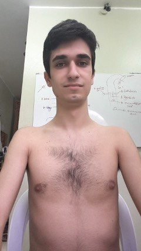
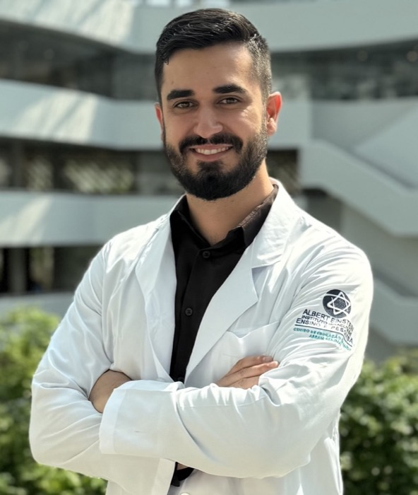
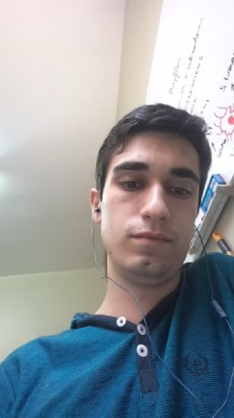

Semana del SuperEstudiante de Medicina y Salud · En vivo y gratis
Si estudias medicina o una carrera de la salud y en el examen olvidas lo que estudiaste, estas tres noches son para ti.
Las técnicas que más usas son las que menos funcionan.
Los mejores estudiantes del mundo hacen cada etapa del estudio de otra forma. En tres noches en vivo te muestro cómo, con el tema que más odias de tu carrera, y cómo empezar a estudiar hasta 10 veces más rápido desde la primera semana.
Domingo 29 y lunes 30 de noviembre, martes 1 de diciembre
21:00 Buenos Aires y Brasilia · 20:00 Caracas y La Paz · 19:00 Bogotá, Lima y Quito · 18:00 Ciudad de México
Por qué el domingo sabías Farmacología y el lunes no recuerdas una sola dosis, y qué hacen distinto los que sí recuerdan.
La fase del estudio que casi todos se saltan, y que decide cuánto tiempo te lleva cada tema.
Cómo algunos estudiantes aprenden en cuarenta minutos el tema que a otros les lleva una tarde entera, con una demostración en vivo.

Estudiante de Medicina, 2016

Hoy, médico
Dr. Daniel Vieira FilhoMédico. Tengo TDAH y en segundo año reprobé Hematología. Hoy enseño a estudiar a más de 4000 alumnos de medicina y salud en más de 12 países.
Esto es para ti si te pasa algo de esto.
Estudias horas y en el examen se te borra lo que estudiaste.
Relees y subrayas, y dos días después no te acuerdas.
Sientes que estudias más que tus compañeros y rindes menos.
Estás en los primeros años de medicina, enfermería, odontología o de otra carrera de la salud, y nadie te enseñó a estudiar.
En la encuesta que hice entre 2021 y 2022 con 4613 estudiantes de medicina y salud, el 78% no lograba memorizar y retener, y el 77% buscaba un método que realmente funcione.
Estas noches no son para quien busca un resumen hecho por otro para leer sin pensar, ni para quien no quiere cambiar su forma de estudiar.
Tres noches, una por fase. Cada una completa por sí sola.
Noche 1 · Domingo 29
Por qué olvidas lo que estudias
El ciclo que repites cada semestre: estudias, apruebas, olvidas. Por qué releer y subrayar te dan la sensación de saber. Y el error que cometen casi todos antes de abrir el libro.
Te llevas: el resumen en PDF y una tarea de diez minutos para la noche siguiente.
Noche 2 · Lunes 30
La Escalera del Dominio: las cuatro fases
Las cuatro fases por las que pasa todo tema que dominas, y la que casi todos se saltan. Cómo decidir qué va primero en una página real. La memorización que se queda, con una demostración en vivo.
Te llevas: el resumen en PDF y tu primera tarjeta hecha en vivo.
Noche 3 · Martes 1
Tu método, en tu materia
Cómo se arma la semana de estudio con el método. Qué hacer con el tema que más odias desde el día siguiente. Y cómo seguir, si quieres seguir conmigo.
Te llevas: el resumen en PDF y el plan de tu primera semana.
Cada noche dura una hora. La grabación queda disponible 24 horas para quien no pudo estar en vivo.
Dr. Daniel Vieira Filho, hoy

Estudiante, 2016
Antes de ser médico, reprobé Hematología y pensé que no era capaz.
Soy Daniel Vieira Filho. Tengo TDAH. En segundo año de Medicina reprobé Hematología y pensé que no era capaz. Busqué cómo estudian los mejores estudiantes del mundo, lo junté en un método y pasé de peor alumno a ayudante del profesor. Hoy soy médico.
Desde 2020 enseño ese método a estudiantes de medicina y de carreras de la salud en América Latina. En estas tres noches te lo muestro en vivo, con tu tema.
Médico formado en Perú, revalidado en Brasil por la Universidad Federal Fluminense, aprobado en el Revalida a la primera tentativa
Posgraduado en psiquiatría por el Hospital Albert Einstein (São Paulo, Brasil)
Responsable Técnico de un importante servicio de salud en São Paulo, Brasil
Traductor oficial de Anki para español
Más de 4000 alumnos en más de 12 países de América Latina, en 6 años
Lo que dicen los alumnos.
KM
«Un capítulo que me tomaba tres días ahora lo saco en una tarde.»
XQ
«Mi amiga me tomó con las flashcards y de 50 respondí 44 sin mirar. Es la primera vez que siento que sé algo antes del examen.»
GT
«Este cuatrimestre no fui a ningún recuperatorio y los domingos volvieron a ser de mis hijos.»
MF
«Aprobé el final a la primera, con 9, cuando la mitad de mi comisión tuvo que volver a rendirlo.»
SP
«Yo estaba convencida de que tenía mala memoria. Me faltaba saber cómo usarla.»
Así de simple.
Reservas tu lugar aquí abajo. Es gratis.
Entras al grupo de WhatsApp, donde llegan el enlace de cada noche y el resumen en PDF.
El domingo a las 21:00 (Buenos Aires y Brasilia) nos vemos en vivo. Trae el tema que más odias.
Preguntas frecuentes
¿Es gratis de verdad?
Sí. Las tres noches son gratis y completas por sí solas. No necesitas comprar nada para aprovecharlas.
¿Dónde y cómo se ve?
En vivo por YouTube, desde el celular o la computadora. El enlace te llega por correo y por el grupo de WhatsApp una hora antes de cada noche.
¿Queda grabado?
Cada noche queda disponible 24 horas. Después se retira, para que las tres noches se vivan en vivo.
Sí. El método es el mismo para toda carrera de la salud; los ejemplos salen de medicina porque es de donde vengo, y vamos a trabajar con el tema que tú traigas.
¿Vas a vender algo?
En la tercera noche te cuento cómo seguir conmigo, si quieres. Lo digo desde ahora para que nadie se sorprenda. Las tres noches valen por sí solas.
Tu próximo examen puede ser el primero en que entras sabiendo que sabes.